전자산업기사 (2016-03-06 기출문제)
1과목: 전자회로
1. 최고 주파수가 4[kHz]의 신호파로 펄스 변조를 행할 경우, 표본화 주파수의 최저값은 몇 [kHz]인가?
- 1
- 2
- 4
- 8
(정답률: 62%)

2. 반송파 전력이 50[kW]일 때 변조율이 90[%]로 진폭변조하였을 때, 하측파 전력은?
- 5.1[kW]
- 10.1[kW]
- 15.1[kW]
- 20.1[kW]
(정답률: 66%)
3. 이상적인 연산 증폭기의 특징으로 적합하지 않은 것은?
- 출력 임피던스가 0이다.
- 입력 오프셋 전압이 0이다.
- 동상신호제거비가 0이다.
- 주파수 대역폭이 무한대이다.
(정답률: 77%)
4. 연산증폭기에 대한 설명 중 옳은 것은?
- 높은 입력 오프셋 전압을 갖는 연산증폭기는 낮은 전압 드리프트를 갖는다.
- 연산증폭기의 입력 바이어스 전류란 두 입력단자를 통해 흘러들어가는 전류의 평균값이다.
- 연산증폭기의 슬루율(Slew Rate)이란 출력 전압의 변화율을 입력 전압의 변화율로 나눈 값이다.
- 연산증폭기의 개방루프이득이 100000이고, 동상이득이 0.25이면 동상신호제거비(CMRR)는 56dB이다.
(정답률: 66%)
5. 직렬 전압 부귀환 회로의 특징으로 적합하지 않은 것은?
- 전압이득의 감소
- 주파수 대역폭의 증가
- 비직선 일그러짐의 감소
- 입력 및 출력 임피던스의 증가
(정답률: 80%)
6. 전원회로에서 전압안정계수에 표현한 식으로 옳은 것은?(단, VL 는 직류출력전압, VS 는 신호원전압, T 는 주위온도, IL 은 부하전류이다.)
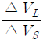
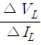
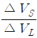
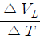
(정답률: 78%)
7. 그림과 같은 전압 귀환 바이어스 회로의 실효 컬렉터 부하 저항은? (단, |Av|>>1 이다.)
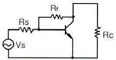
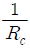
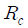
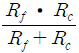
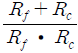
(정답률: 79%)
8. 어떤 B급 푸시풀 증폭기의 효율이 0.7이고 직류 입력전력이 16W이면, 교류 출력전력은 몇 W인가?
- 9.3
- 9.7
- 10.5
- 11.2
(정답률: 75%)
9. 한 개의 NPN형 트랜지스터와 PNP형 트랜지스터를 직결하여 등가 PNP형 트랜지스터로 동작시키는 접속은?
- 트랜스 결합 접속
- 달링톤(darlington) 접속
- SEPP(single ended push pull) 접속
- 상보대칭(complementary symmetry) 접속
(정답률: 76%)
10. 공통 컬렉터(Common Collector) 증폭 회로에 대한 설명으로 틀린 것은?
- 전압 증폭용으로 많이 사용된다.
- 전압 이득은 AV ≃ 1 이다.
- 입력과 출력 사이의 위상은 동일하다.
- 입력 임피던스가 높고, 출력 임피던스는 낮다.
(정답률: 52%)
11. 진폭변조(DSB) 방식에서 변조도를 90%로 하면 피변조파의 전력은 반송파 전력의 약 몇 배인가?
- 1.1
- 1.4
- 1.6
- 2.1
(정답률: 71%)
12. 불연속 레벨 변조 방식에 속하지 않는 것은?
- 펄스 위상 변조(PPM)
- 펄스 수 변조(PNM)
- 펄스 부호 변조(PCM)
- 델타 변조(ΔM)
(정답률: 48%)
13. 다음과 같이 다이오드와 트랜지스터로 구성된 DTL 논리 회로의 게이트 기능은?
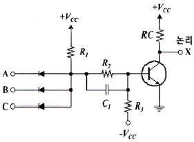
- 3입력 NOR
- 3입력 XOR
- 3입력 NAND
- 3입력 AND
(정답률: 67%)
14. 단안정, 비안정, 쌍안정 멀티바이브레이터는 무엇에 의해 결정되는가?
- 결합 회로의 구성에 따라 결정된다.
- 전원 전압의 크기에 따라 결정된다.
- 전원 전류의 크기에 따라 결정된다.
- 바이어스 전압의 크기에 따라 결정된다.
(정답률: 86%)
15. 귀환이 걸리지 않을 때의 증폭회로의 전압이득을 A, 귀환율을 β라 할 때 발진 조건은?
- Aβ ≥ 1
- Aβ ≤ 1
- A = -β
- A = β
(정답률: 77%)
16. 연산증폭기 회로에서 E0 을 계산하는 식을 유도했을 경우에 옳은 것은?
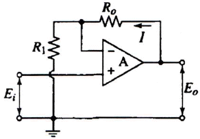
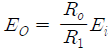
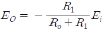
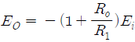
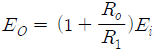
(정답률: 58%)
17. 증폭기의 이득에 관련한 관계식 중 틀린 것은?
- 전압이득
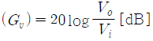
- 전류이득
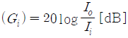
- 전력이득
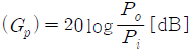
- 다단 증폭기의 종합이득
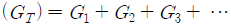
(정답률: 77%)
18. 전압이득이 40[dB], 무귀환 시 왜율이 12[%]인 저주파 증폭기에 입력 측으로 귀환율(β)을 0.09라고 하면 귀환 시 왜율은 몇 [%]인가?
- 0.9
- 1.5
- 2
- 1.2
(정답률: 61%)
19. 피어스 수정발진회로의 발진주파수 변동요인으로 가장 적합하지 않은 것은?
- 부하의 변동
- 주위 온도의 변화
- 발진회로의 차폐
- 전원 전압의 변동
(정답률: 76%)
20. 정격 부하에서 출력 전압이 100[V]인 전원이 무부하 상태에서의 출력 전압이 110[V]로 증가하였다면 부하 전압 변동률은 몇 [%]인가?
- 5
- 10
- 20
- 25
(정답률: 86%)
2과목: 전기자기학 및 회로이론
21. 간격 d(m)인 두 평행판 전극사이에 유전율 ε인 유전체를 넣고 전극 사이에 전압
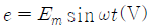
를 가했을 때 변위전류(A/m2)는?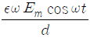
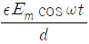
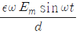
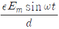
(정답률: 56%)
22. 반지름 a인 구상 전극의 1/2 만을 지면에 매설했을 때의 접지저항은?(단, 지면의 도전율은 σ이고, 지면과 전극과의 접촉저항은 무시한다.)
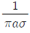
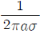
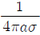
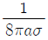
(정답률: 59%)
23. 포아송의 방정식
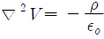
는 어떤 식에서 유도한 것인가?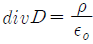
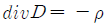
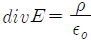
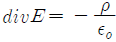
(정답률: 46%)
24. P(x,y,z)점에 3개의 힘 F1 = -2i + 5j - 3k, F2 = 7i + 3j - k 가 작용하여 0이 되었다. 힘 F3을 구하면?
- -2i-5j-3k
- -2i+5j-3k
- -5i+2j-4k
- -5i-8j+4k
(정답률: 70%)
25. 감자력에 대한 내용으로 옳은 것은?
- 자속에 비례한다.
- 자화의 세기에 비례한다.
- 자극의 세기에 반비례한다.
- 자계의 세기에 반비례한다.
(정답률: 76%)
26. 자기 인덕턴스 0.⑤[H]의 회로에 흐르는 전류가 매초 500[A]의 비율로 증가할 때 자기 유도 기전력의 크기는 몇 [V]인가?
- 2.5
- 25
- 100
- 1000
(정답률: 66%)
27. 사용되는 전자파의 파장이 가장 긴 것부터 순서대로 나열한 것은?
- 전자렌지 - 살균소독 - 사진전송 - 레이다
- 레이다 - 살균소독 - 사진전송 - 전자렌지
- 사진전송 - 레이다 - 전자렌지 - 살균소독
- 전자렌지 - 살균소독 - 레이다 - 사진전송
(정답률: 69%)
28. 100[mH]의 자기 인덕턴스를 가진 코일에 10[A]의 전류를 통할 때, 축적되는 에너지(J)는?
- 1
- 5
- 50
- 1000
(정답률: 53%)
29. 유전체 내의 전계의 세기 와 분극의 세기 와의 관계를 나타내는 식은?
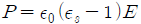
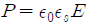
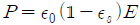
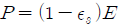
(정답률: 67%)
30. 균일한 자기장 내에 수직으로 입사한 전자는 어떤 운동을 하는가?
- 나선운동
- 포물선운동
- 등속직선운동
- 등속평면운동
(정답률: 56%)
31. 선형 시변 커패시터의 전하가 q(t)=C(t), v(t) 일 때 i(t)는?
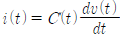
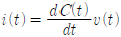
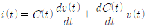
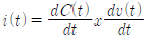
(정답률: 64%)
32. 그림과 같은 파형의 식은?
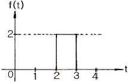
- f(t)=2u(t-2)
- f(t)=2u(t-3)
- f(t)=2u(t-3)-2u(t-2)
- f(t)=2u(t-2)-2u(t-3)
(정답률: 70%)
33. 그림과 같은 저항 R과 커패시터 C의 병렬회로에 전압 v(t)=Vmcosωt 을 가할 때 C에 흐르는 전류는?
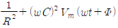
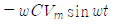
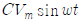
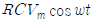
(정답률: 62%)
34. 기본 주파수의 정수배가 되는 높은 주파수의 정현파를 무엇이라고 하는가?
- 고주파
- 고조파
- 기본파
- 합성파
(정답률: 80%)
35. 그림과 같은 R-L 저역 통과 필터의 차단 주파수가 30kHz일 때 L1값은 약 몇 mH 인가?
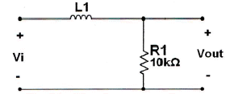
- 26.2
- 42.4
- 53
- 68.5
(정답률: 53%)
36. 다음 그림과 같은 이상적인 변압기 회로에서 입력 임피던스 Zi는? (단, 권선비는 n:1, L은 인덕턴스이다.)
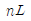
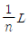
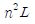
(정답률: 60%)
37. 다음 그림에서 스위치를 닫은 후 전류가 최대로 흐를 때의 시간은 몇 초[s]이며, 이때 흐르는 전류는 몇 A 인가?
- 0[s], 0.2A
- ∞[s], 0.2A
- 60[s], 0A
- 1[s], 0A
(정답률: 66%)
38. 그림 (a)와 같은 △결선과 그림 (b)와 같은 Y결선을 등가로 두었을 때 R1의 저항은?
- R
- 2R
- 4R
- 6R
(정답률: 64%)
39. 다음 필터에 대한 설명으로 틀린 것은?
- 고역필터[HPF]는 차단주파수 이하만 통과시킨다.
- 저역필터[LPF]는 차단주파수 이하만 통과시킨다.
- 대역저지필터[BEF]는 두 차단주파수 이외의 성분은 모두 통과시킨다.
- 대역필터[BPF]는 두 차단주파수 범위만 통과시킨다.
(정답률: 78%)
40. 그림(a)의 등가회로를 그림(b)라 할 때, 전압원 E는 몇 V 인가?
- 5
- j5
- j10
- 10
(정답률: 55%)
3과목: 전자계산기일반
41. 컴퓨터의 클록 펄스가 5MHz이고 20비트 레지스터를 가지고 데이터를 전송할 때, 비트시간과 워드시간은 각각 얼마인가?
- 0.2μs, 4μs
- 0.4μs, 8μs
- 0.6μs, 12μs
- 0.8μs, 16μs
(정답률: 67%)
42. 주기억장치가 연속한 8byte의 필드를 Double word라 할 때 Half word는 몇 byte 인가?
- 2
- 4
- 8
- 16
(정답률: 61%)
43. 어떤 명령이 실행되기 위해서 가장 먼저 이루어지는 마이크로 오퍼레이션은?
- MBR ← PC
- PC ← PC+1
- IR ← MBR
- MAR ← PC
(정답률: 82%)
44. 수동 입력(manual input)을 나타내는 순서도 기호는?
(정답률: 68%)
45. ASCII 코드에 대한 설명으로 옳은 것은?
- 자기보수 코드이다.
- BCD 코드의 확장이다.
- 표시할 수 있는 숫자의 수는 28 =256 가지이다.
- 7개의 정보비트와 한 개의 패리티 비트로 구성된다.
(정답률: 69%)
46. 컴퓨터의 명령을 0-address 명령, 1-address 명령, 2-address 명령, 3-address 명령으로 분류했을 때 그 기준이 되는 것은?
- 명령어의 수
- 레지스터의 수
- 기억장치의 크기
- 오퍼랜드의 수
(정답률: 74%)
47. 중앙처리장치의 명령어에서 Operand가 실제 데이터를 의미하는 주소 방식은?
- Immediate Addressing
- Direct Addressing
- Register Addressing
- Indirect Addressing
(정답률: 66%)
48. 속도보다 가격을 중시하는 마이크로프로세서에서 사용되는 버스 구성 방식은?
- 4 버스방식
- 3 버스방식
- 2 버스방식
- 1 버스방식
(정답률: 67%)
49. 더 이상 사용하지 않거나 의미 없는 기억 공간들을 모아서 유용하게 사용할 수 있도록 하는 방법은?
- Garbage Collection
- Memory Collection
- Relocation
- Mapping
(정답률: 74%)
50. 다음 중 자바프로그램의 가장 큰 단위는?
- 패키지
- 클래스
- 자비 인터페이스
- 메소드
(정답률: 70%)
51. 컴퓨터 내부에 있는 하나의 레지스터에 기억된 자료를 다른 레지스터로 옮길 때 이용하는 연산은?
- AND
- OR
- MOVE
- Complement
(정답률: 76%)
52. 컴퓨터 디스크에 사용되는 표면이 8개이고 각 표면에는 16개의 트랙과 8개의 섹터(sector)가 있을 때, 섹터 주소지정에 필요한 비트 수는?
- 12bit
- 10bit
- 8bit
- 6bit
(정답률: 62%)
53. 디지털(digital) 컴퓨터와 직접적 관계가 있는 것은?
- 논리회로
- 적분회로
- 증폭회로
- 미분회로
(정답률: 79%)
54. 4비트 그레이 코드를 2진수로 변경하는 논리회로를 구현하기 위한 게이트의 종류와 그 개수로 맞는 것은?
- AND 게이트 3개
- OR 게이트 3개
- NAND 게이트 3개
- XOR 게이트 3개
(정답률: 74%)
55. 다음 중 I/O 장치에 해당되지 않는 것은?
- 키보드
- 프린터
- 주기억장치
- 보조기억장치
(정답률: 66%)
56. 일반적인 컴퓨터가 채택하고 있는 수치 자료의 표현 방법에 해당되지 않는 것은?
- 1의 보수 표현
- 4진수 표현
- 부호 절대치 표현
- 부동 소수점 표현
(정답률: 70%)
57. 터미널과 컴퓨터 사이의 통신에 필요한 것은?
- 카드리더, 프린터
- 유선 무전기와 무선 무전기
- 모뎀과 데이터 셋
- 누산기
(정답률: 75%)
58. 인간 중심의 코드로 기술되어 있으며 컴파일러, 인터프리터 등 번역기를 통한 번역과정을 거쳐야 실행 될 수 있는 프로그램은?
- 문제중심
- 기계
- 목적
- 원시
(정답률: 68%)
59. 누산기에 대한 설명으로 옳은 것은?
- 데이터의 주소를 일시적으로 저장
- 연산 결과 등을 일시적으로 저장
- 가장 최근에 인출된 명령어 코드를 저장
- 다음에 인출할 명령어의 주소를 저장
(정답률: 80%)
60. 컴퓨터를 이용한 생산공정, 교육 등의 응용분야에 해당하지 않는 것은?
- CAD
- CAM
- CAI
- ALU
(정답률: 73%)
4과목: 전자계측
61. 회로에서 A 점의 파형으로 옳은 것은?
(정답률: 66%)
62. 버터플라이(butterfly)형 주파수계의 특징이 아닌 것은?
- 측정주파수 범위가 넓다.
- Q가 50정도이다.
- VHF-UHF대 주파수 측정에 적합하다.
- 회전자와 고정자로 LC공진회로를 이루어 주파수를 측정한다.
(정답률: 68%)
63. 지시계기의 주요 3대 구성 요소가 아닌 것은?
- 구동(Driving) 장치
- 제동(Damping) 장치
- 제어(Controlling) 장치
- 보상(Compensating) 장치
(정답률: 74%)
64. 스펙트럼 분석기의 특징으로 적합하지 않은 것은?
- 주파수 대역폭이 넓다.
- 디스플레이(display)로 직시할 수 있다.
- 다이나믹(dynamic) 레인지가 좁다.
- 잡음 신호 측정이 가능하다.
(정답률: 71%)
65. 유도형 적산전력계에서 전압코일에 발생되는 자속과 전류 코일에 발생하는 자속의 차를 보상하기 위한 장치는?
- 위상보상 조정장치
- 경부하보상 조정장치
- 중부하보상 조정장치
- 제동보상 조정장치
(정답률: 62%)
66. 윈-브리지(Wien-bridge)형 발진기의 특성으로 틀린 것은?
- 직류 브리지이다.
- 주파수 안정성이 뛰어나다.
- 파형의 왜곡율(distortion)이 적다.
- 넓은 주파수 범위의 저주파 발진기이다.
(정답률: 65%)
67. 수신기에 일정한 입력 신호를 가했을 때 재조정을 하지 않고 얼마나 오랫동안 일정한 출력을 얻을 수 있는가 능력을 나타내는 것은?
- 감도
- 안정도
- 충실도
- 선택도
(정답률: 75%)
68. 전력 또는 전류를 적당한 크기로 변환하거나, 또는 회로와 계기를 전기적으로 분리시키는 목적으로 사용되지 않는 것은?
- 변성기
- 변압기
- 변조기
- 변류기
(정답률: 57%)
69. 다음과 같은 블록도를 갖는 측정은 무슨 특성을 측정하고자 하는 것인가?
- 진폭 제한기의 특성 측정
- 중간주파 증폭기의 특성 측정
- 저주파 증폭기의 특성 측정
- 주파수 변별기의 특성 측정
(정답률: 58%)
70. 다음 ( ) 안에 내용으로 옳은 것은?
- 전압강하
- 전압증하
- 전압단락
- 정격전압
(정답률: 75%)
71. 표준 계기의 구비 조건으로 틀린 것은?
- 튼튼하고 취급이 편리할 것
- 동(銅)에 대한 열기전력이 클 것
- 응답도가 좋고 절연 및 내구력이 높을 것
- 영구성이 있고 외부 조건 등의 영향이 없을 것
(정답률: 78%)
72. 리사주 도형으로 신호의 주파수를 측정할 수 있는 계기는?
- 가동코일형 전류계
- 전류력계형 계기
- 오실로스코프
- 열전대형계기
(정답률: 77%)
73. 음량계(VU meter)에 관한 설명으로 틀린 것은?
- 감시용이며, 시정수는 중요하지 않다.
- 가변 저항 감쇠기와 연결하여 사용한다.
- 눈금은 VU 눈금 이외에 [%]눈금으로 표시한 것도 있다.
- 방송이나 녹음시 음성 레벨의 크기를 측정하기 위한 계기이다.
(정답률: 76%)
74. 저주파 증폭기에서 입력의 신호전력과 잡음전력 비가 10:1이고, 출력의 신호전력과 잡음전력 비가 15:2일 때 잡음지수 F로 옳은 것은?
- 1
- 1.3
- 2
- 2.3
(정답률: 62%)
75. FM 수신기의 선택도 측정에서 희망파의 주파수를 fO, 두 방해파의 주파수를 각각 f1, f2라고 할 때 희망파에 방해를 주는 주파수 성분은?
- fO = 5f1~3f2 Hz
- fO = 3f1~2f2 Hz
- fO = f1~f2 Hz
- fO = 2f1~f2 Hz
(정답률: 56%)
76. 전압계의 내부저항이 500Ω이었을 때 부하 RL에서 소비하는 전력은? (단, 전압계 및 전류계의 지시치가 100V, 2A이다.)
- 90W
- 100W
- 180W
- 200W
(정답률: 57%)
77. 최대눈금 50mV 내부저항 10Ω의 직류 전압계에 배율기를 사용하여 3V의 전압을 측정하려고 할 때 배율기의 저항값은?
- 500Ω
- 590Ω
- 600Ω
- 690Ω
(정답률: 72%)
78. 대전류를 소전류로 변환하여 측정범위를 확대하기 위한 용도의 계기용 변류기는?
- 교류전용
- 직류전용
- 교류, 직류 양용
- 고주파전용
(정답률: 66%)
79. 브리지 회로의 평형조건은?
- R1L=R2C
- R1L=R2/C
- R2/R1=L/C
(정답률: 57%)
80. 오실로스코프(oscilloscope)의 사용상 주의점으로 틀린 것은?
- 접지 단자는 반드시 접지한다.
- 관측 파형은 항상 중앙에 오게 한다.
- 사용하지 않을 때는 휘도를 낮추거나 전원을 끈다.
- 관측하려는 신호의 주파수가 낮거나 직류의 경우는 직접 단자를 사용한다.
(정답률: 73%)